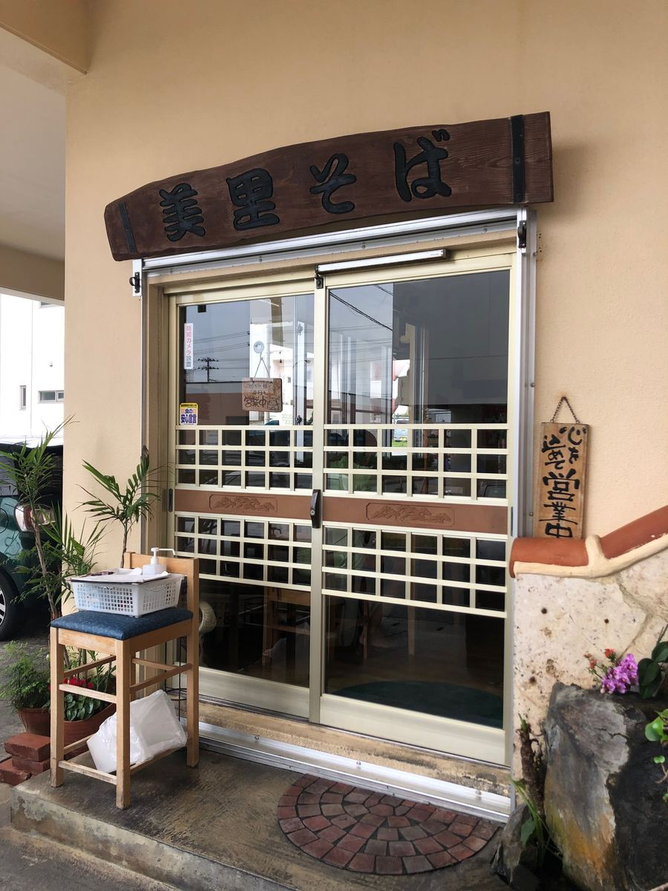
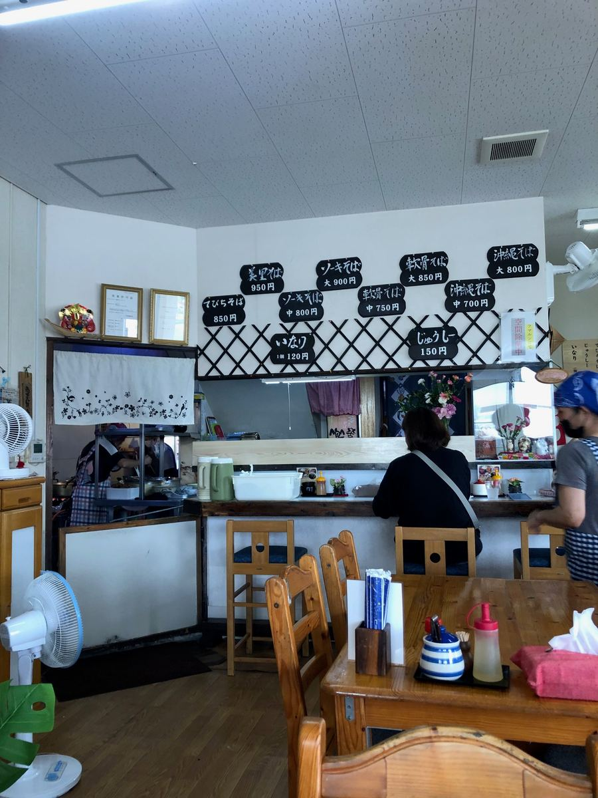
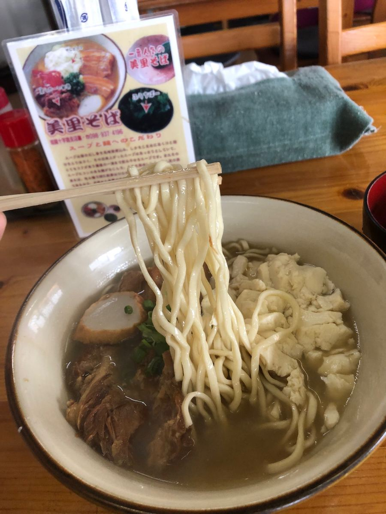
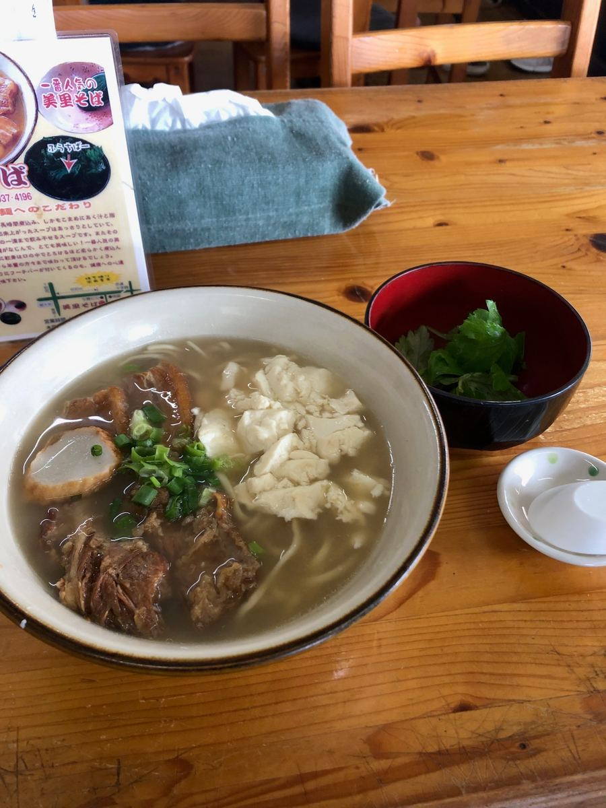
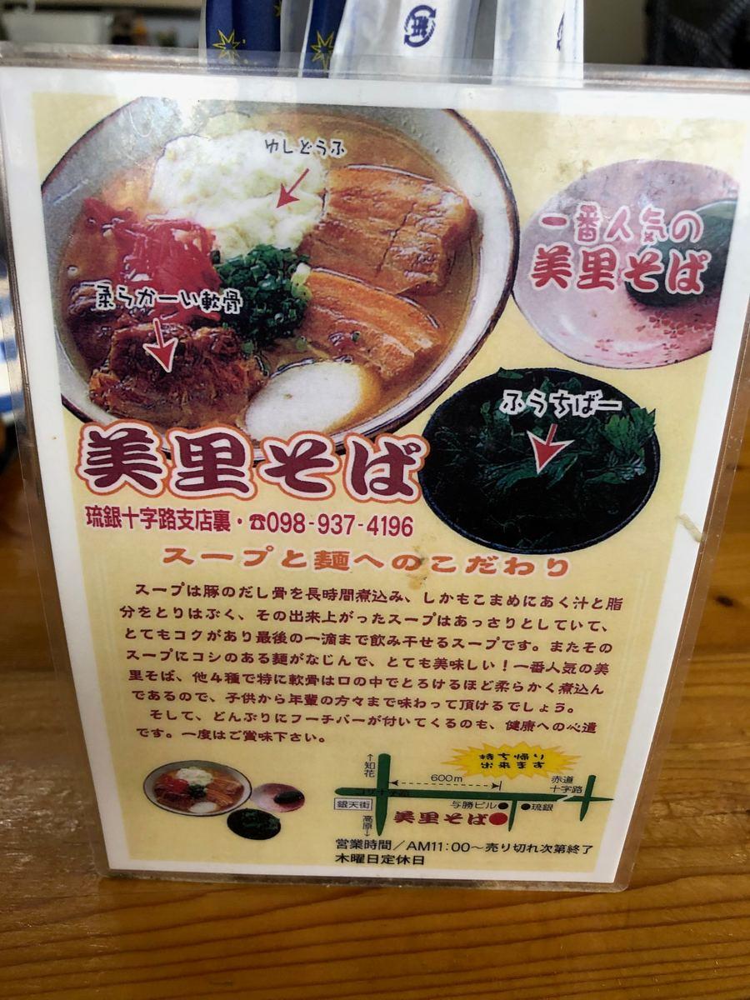

冲绳面巡礼之旅，这次去了位在冲绳市东的「美里面」🍜 2025年5月吃的😆

是位在冲绳市东「琉银十字路」分行后方住宅区一角的店😊

点了和店名相同的「美里面」。猪骨基底的汤头，搭配中细、微卷的面条，煮得偏软。

配料是嫩豆腐、三层肉、软骨排骨、鱼板全部加料。三层肉和软骨排骨都很入味，不过也有筋感。


看说明板，似乎是把猪高汤骨花时间慢慢熬煮，并勤快地捞除浮沫和油脂。软骨据说炖煮得软到入口即化😋
艾草（Fuchiba）是很棒的点缀，感觉能让整体的味道更紧实。
说明板上也写着「碗里附上艾草（Fuchiba）也是对健康的用心」😊
店里不断有在地客人上门，让人觉得这是一家深受当地喜爱的店。
评分（9分/15分）：味道算是普通好吃，不过是嫩豆腐・三层肉・软骨排骨・鱼板全部加料，再以艾草点缀的、扎根于在地的一碗😄
面：★★★☆☆（3）
汤头：★★★☆☆（3）
配料：★★★☆☆（3）